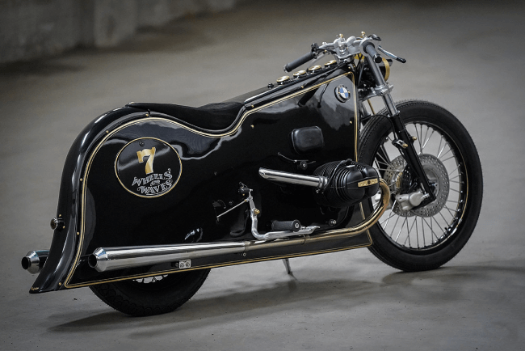
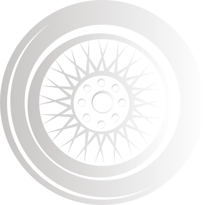
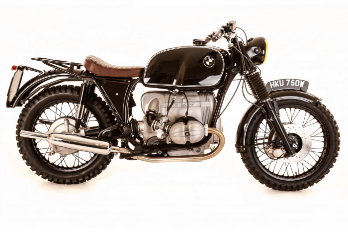
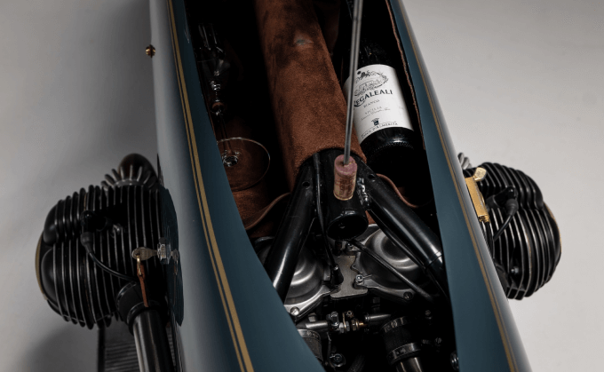
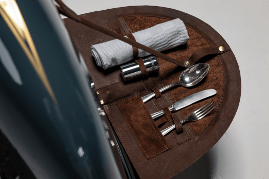

Moto
Good Ghost: Kingston Customs’ extraordinary BMW R100
Dirk Oehlerking has a portfolio of incredible builds, but there are two machines that stand out. They are the White Phantom and Black Phantom—two classic BMW boxers, with exquisite hand-formed bodywork and an unusual art deco vibe.
Dirk Oehlerking has a portfolio of incredible builds, but there are two machines that stand out. They are the White Phantom and Black Phantom—two classic BMW boxers, with exquisite hand-formed bodywork and an unusual art deco vibe.
How did the idea of creating a third Phantom come about?
Dirk never really planned to build a third Phantom. He originally set out to build just one, but the request came from a source impossible to ignore: the renowned custom motorcycle patron and collector, Bobby Haas.
“In 2019, the Distinguished Gentleman’s Ride in Dallas took place at the Haas Moto Museum,” Dirk tells us. “The White Phantom and Black Phantom were the main attraction in the museum that weekend. That honored and touched me very much.”
Kingston new Project BMW Good Ghost. New project for the Haas Moto Museum Dallas / Texas
“Bobby Haas and museum director Stacey Mayfield asked me if it was possible to build a third Phantom, so that a trilogy, a family, would be created.”, says Dirk
The museum’s brief was that the bike should be named ‘Ghost,’ it should be grey, and it should match the style of the existing two bikes. On a philosophical level, the new bike would act as guardian of the other two, and so it would need to be more physically imposing and faster.
What’s inside?
Here, he’s swapped out the shaft drive swing arm for a single-shock BMW ‘Monolever’ unit, equipped with a YSS shock.
Dirk had used the BMW R80 as a base for the first two Phantoms, but this time he sourced a 1980 BMW R100 RS. And just like before, he set out to keep the chassis mostly stock, with one notable exception.
Design
Bodywork evolution
Good Ghost’s bodywork is an evolution of Kingston’s Phantom design. The first bike, White Phantom, featured bodywork that left both wheels exposed; Black Phantom covered up the back end, but left the front end open.
This time, Dirk’s enclosed the R100 in an elegant full-length fairing.

He started by designing a framework with wire and tape, which was then covered in cardboard and paste, to create a mockup of the final design. Once that was done, Dirk hand-shaped the entire structure out of 2 mm thick aluminum. Remarkably, the whole thing weighs just 21 kg.
The piece of BMW 328 Roadster
There’s another classic touch up front: a set of kidney grills, directly inspired by the 1936 BMW 328 Roadster. Just above, a recessed headlight shines out from behind a round glass pane. Fehling clip-ons with leather grips and classic levers finish off the cockpit.
The piece of BMW 328 Roadster
There’s another classic touch up front: a set of kidney grills, directly inspired by the 1936 BMW 328 Roadster. Just above, a recessed headlight shines out from behind a round glass pane. Fehling clip-ons with leather grips and classic levers finish off the cockpit.
A small fuel cell
The Phantom design deliberately places the rider on top of the motorcycle, rather than ‘in’ it—which leaves little room for a traditional fuel tank. So Dirk fabricated a small fuel cell to sit behind the transmission, with an external fuel pump to send the gas where it needs to go.
Some trick engineering
Repacking everything called for some trick engineering. Dirk moved the carbs to inside the fairing, added K&N filters, and built custom intake manifolds. The exhaust is a stainless steel affair, which delicately traces the bodywork right up to its tapered tail section.
The special art of this motorcycle
“The most interesting, exciting part of my work was the design. Designing a gentleman racer that completes the trilogy, that is the special Art of this motorcycle”, says Oehlerking.
“I started to build a cladding with wire frame and tape, which I then coated with cardboard and paste, so I created design and style. I didn’t want to sit behind a fairing in the motorcycle, I wanted to ride the motorcycle. I hid an original BMW R100RS under the fairing, frame and technology all original, I only used a Monolever damper. Like the White and Black Phantom, I placed the carburetor behind the fairing Kingston Hand Made.”
Like its siblings, Good Ghost is a true gentleman’s racer that not only looks spectacular, but is reportedly a joy to ride too (despite its limited turning circle).
“When you ride it, it feels like you are in a different time,”, says Dirk.
Up top is a custom leather saddle, with upholstery extending all the way to the front. The design includes a custom ‘dash,’ with a row of Kingston-branded gauges from MMB neatly integrated with the leather.
What’s really cool about the Good Ghost is the fact that it isn’t just for show, as it actually features plenty of storage space. Lift the seat and you’ll see a compartment for storing a bottle of wine and a glass, while the corkscrew and a spare spark-plug are stowed away in the lift mechanism.
To this end, the rear section features two hinged panels, secured by leather clasps. The left flips out to reveal a tool kit, while the right houses a selection of century-old silverware.
To this end, the rear section features two hinged panels, secured by leather clasps. The left flips out to reveal a tool kit, while the right houses a selection of century-old silverware.
To this end, the rear section features two hinged panels, secured by leather clasps. The left flips out to reveal a tool kit, while the right houses a selection of century-old silverware.
Gallery

{kind=link}
{kind=link}
{kind=link}
{kind=link}
{kind=link}
{kind=link}
{kind=link}
{kind=link}
{kind=link}
{kind=link}
{kind=link}
{kind=link}
{kind=link}
{kind=link}
{kind=link}
{kind=link}
{kind=link}
{kind=link}
{kind=link}
{kind=link}
{kind=link}
{kind=link}
{kind=link}
{kind=link}
The-Museum
“Motorcycling is not simply a means of transportation, a way to ride along the street or the highway...it is a cultural phenomenon.”
Bobby Haas
Motorcycling is a passion that exerts an intoxicating grip on any soul it touches. But you need not twist a throttle or feel the road below to experience the passion or feel the raw escape. Just walk through the expansive portal of The Haas Moto Museum, and you will instantly feel its grip.

The sheer expanse of The Haas Collection, with over 230 motorcycles spanning 13 decades, housed in the Museum and the adjacent Dragon Gallery, is a joyous revival of a cultural phenomenon that continues to evolve to this day. From the time when a crude gas tank was first strapped onto a bicycle frame to the creation of radical new designs that push the outer limits of the imagination, The Haas Collection has no equal anywhere, with its seemingly endless array of truly unique motorcycles embedded in two venues of unparalleled beauty.
Not only does the Collection immerse you in the evolution of motorcycles from 1899 to the present day, it also unveils an unparalleled collection of over 60 custom motorcycles—a dazzling testament to the Renaissance notion of inventors creating art for the sake of art, with no blueprint or predecessor to guide their hands.
Step into a world where the fantasy of limitless speed blends with the reality of mechanized motion, where the cycles are elevated on custom platforms and surrounded by one-off metallic sculptures that enliven the total experience.
And when you experience this gem of a Collection, the word connectivity will no longer mean what it did when you entered. It will not refer to emails or texts—it will instead bring to mind generations of escape artists connected only to the ribbon of road that unraveled beneath their feet and the wind and the scenery that were their constant companions.